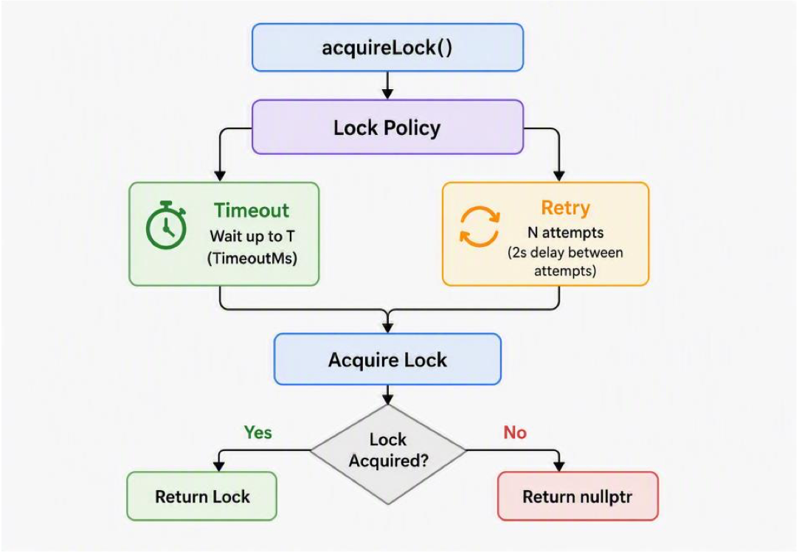
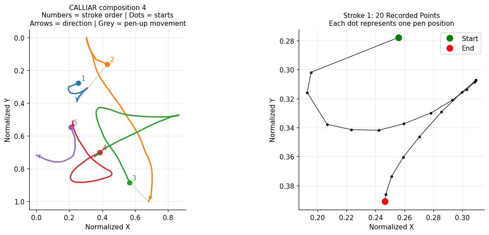
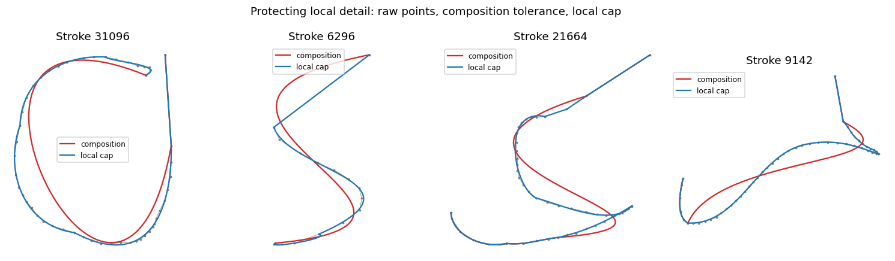

Murex
7 Oct 2026 – PresentPart-time role · Contract computation performance
Working on performance optimization for a key contract-computation flow. The work is in progress.
I’m a Computer and Communications Engineering student at the American University of Beirut, with a particular interest in the intersection of AI and cybersecurity. I build AI systems for practical problems in healthcare, robotics, and beyond, while exploring how to make them reliable and secure.
My interests lie at the intersection of artificial intelligence and cybersecurity. I want to use machine learning to understand security threats and explore how AI systems can be attacked, defended, and made more resilient.
I also enjoy building AI systems that address practical problems in healthcare, robotics, and business operations. My projects range from analyzing spinal MRI scans and modeling biological sensors to reconstructing Arabic calligraphy for robotic writing. Across these applications, I care about how a model’s output becomes something people can understand and use.
As a Computer and Communications Engineering student at the American University of Beirut, I’m developing these interests through research, hands-on security labs, and software engineering work at Murex. I want to bring that experience into building AI systems that are useful, dependable, and secure.
Working on performance optimization for a key contract-computation flow. The work is in progress.
std::variant to make the caller’s policy choice explicit.The older framework routed screen events through one large switch statement. I migrated screens to specialized handlers for individual events. The main challenge was understanding behavior that the old framework had supplied implicitly.
For example, changing the data automatically refreshed the old screen. The newer framework required an explicit refresh. Tracing why the screen stayed unchanged helped me find the missing refresh step. I learned to follow a change all the way to what appears on screen, rather than assuming that updated data means the feature works.
The modernization effort covered a backlog of 21 legacy container structures. Selecting a Standard Library replacement required understanding each use and its runtime flags. A container’s shape in the source did not fully describe its behavior.
I investigated the intended access and uniqueness rules before choosing replacements such as vectors, sets, and unordered maps. Debugging these changes taught me that replacing a small piece of code can affect other parts of the system. I learned to check those connections before deciding a change is complete.
I designed a reusable interface to standardize lock acquisition. Callers select a timeout or retry policy explicitly through a C++ std::variant. As I applied the API to different call sites, the design expanded to accommodate three levels of control.

| Interface level | Responsibility |
|---|---|
| Execute with a lock | Acquire the lock, execute the protected logic, and release the lock. |
| Acquire a lock | Apply the selected acquisition policy. The caller handles the protected work and release. |
| Build a lock object | Provide the object while leaving the workflow under caller control. |
I added a “Break Clause Type” field to dynamic reporting tables, allowing users to work with information that previously required opening individual trades. I traced the existing data access and field-registration mechanisms, then coordinated checks with the requesting department and QA.
My Data Structures & Algorithm Analysis course taught me to choose data structures based on their behavior and the operations they need to support. I applied this at Murex when deciding whether vectors, sets, or maps could replace legacy containers while preserving their behavior.
My Object-Oriented Design course taught me to organize code around clear interfaces. I applied that idea when designing the LockAPI. My first version handled the whole locking process automatically, but existing code sometimes needed more control. Expanding it to support three ways of using it taught me to explore different use cases before settling on a design.
The internship also taught me how carefully an existing system needs to be studied before changing it. During the screen migration, the data updated but the display did not. Finding the missing refresh step taught me to check what the user actually sees, even when the code runs successfully.
My Software Engineering course taught me how iterative development helps organize work and respond to changes. Serving as Scrum Master for two sprints gave me a chance to apply that approach and improve how I explained progress and raised problems. I’ll bring these habits into the FYP integration phase, where delays in one component can affect the rest.
I’m developing a system that turns Arabic text and a requested calligraphic style into paths a robot can write with a broad-edged qalam.
The challenge goes beyond reproducing an image. Arabic letterforms change with joining context, and small dots or hooks can carry meaning. A writing robot needs ordered strokes, explicit pen lifts, and a calibrated relationship between the nib and the paper.

100% passed the sampled reconstruction audit at a tolerance of 1% of composition extent.
Original point count divided by fitted control-point pairs at the same 1% setting.
181 correct predictions on 232 held-out images. Test macro-F1: 0.7401.
The geometry analysis covers 2,500 CALLIAR compositions containing 44,987 primitive strokes and 1,917,438 recorded points. Bézier curves provide a compact representation of the recorded points while preserving dot placement and stroke boundaries.
On a matched sample of 2,500 strokes, the improved fitter raised the sampled audit pass rate from 82.48% to 100% at the 1% setting and used about 10.9% fewer curve segments on average. The additional checks increased median processing time from 2.91 to 6.98 milliseconds per stroke in the recorded environment.
| Metric | Earlier fitter | Improved raw fitter |
|---|---|---|
| Sampled audit pass rate | 82.48% | 100% |
| Average cubic segments per stroke | 2.949 | 2.628 |
| Median coordinate-pair compression | 5.75× | 6.50× |
| Median runtime including checks | 2.91 ms | 6.98 ms |

The style-recognition study uses 1,252 single-style images from MBZUAI’s DuwatBench with related images grouped before division into training, validation, and test sets. This reduced known overlap between subsets. The labels cover Diwani, Kufic, Naskh, Nasta’liq, Ruq’ah, and Thuluth.
The grouped split contains 825 training, 195 validation, and 232 test images across 582 related-image groups. Missing metadata limits the certainty of artist and collection separation. The selected model achieved 0.6798 validation macro-F1 and 73.18% mean per-style recall on the test set.
| Method | Accuracy | Macro-F1 |
|---|---|---|
| Majority-class baseline | 52.59% | 0.1149 |
| Full image, frozen ResNet18 features | 56.03% | 0.5058 |
| Annotated crop, frozen ResNet18 features | 67.24% | 0.5979 |
| Annotated crop, fine-tuned final block, balanced sampling & augmentation | 78.02% | 0.7401 |
The frozen-feature models use logistic regression. The neural checkpoint was selected by validation macro-F1, an average that gives each style equal weight. The test set is small and imbalanced, and it was revisited during diagnosis. These results measure style recognition on this split.
Error analysis exposed a useful limitation: Naskh had 80.0% recall but only 45.7% precision, because the model assigned that label too often. A blur stress test reduced accuracy to 66.38%. These findings guide further validation before using the classifier to assess generated calligraphy.
A comparison of five platforms led to a recommendation for the myCobot 280 in the November hardware proposal. Its six axes offer control over the qalam’s orientation as well as its position. Preliminary calibration software is ready for further testing, with procurement and physical validation still pending.
Trajectory research, style classification, and hardware planning are the current deliverables. Learned text-to-stroke generation and integrated pen-on-paper writing remain future work. A 95th-percentile planar error of at most 1 mm on a 100 mm calibration pattern is a proposed physical acceptance target.
Scoped the system, researched datasets, benchmarked stroke reconstruction, and completed the fall progress report.
Added style-recognition experiments and diagnostics, investigated stroke variants, and prepared the myCobot hardware proposal.
Validate a short-word pilot in one reviewed style, develop the trajectory generator, and calibrate the writing setup.
Integrate the models with the robot in February–March, working toward an internal completion target of 11 April 2027.
Working with Arabic calligraphy taught me to pay attention to small details. A reconstructed stroke can look accurate overall and still lose a dot, hook, or sharp turn that changes the writing. I learned to check those details alongside the overall shape.
My Introduction to Machine Learning course taught me to look at precision and recall alongside accuracy when evaluating a classifier. My Neural Networks course taught me how network design and training choices affect a model’s behavior. I applied these lessons when fine-tuning the style classifier and examining its mistakes for each calligraphic style. This helped me see where a good overall score could hide a tendency to assign one label too often.
Considering a reader’s perspective also changed how I judge the reconstructed writing. A dot or a small change in a letter can affect what someone reads, even when the overall curve looks close to the reference. This is why I want the planned expert review to assess readability and style alongside the geometric measurements.
The next step is to turn digital paths into physical writing. That means checking how the robot moves, lifts the pen, and touches the paper. I’ll use what I learned at Murex about connecting software components, then test each stage before assessing the finished writing.
These projects connect machine learning to practical problems. Expand any project to explore its methods and design decisions without leaving the page.
AI engineering
Helped build and deploy a pipeline that combines segmentation models with anatomical measurements and structured reports. The system flags findings for physician review, with validation that distinguishes useful measurements from signals that did not generalize.
What I learned: My AI Engineering & Production course taught me to consider how an AI system’s outputs are checked and presented. The MRI project made that practical: a measurement can be correct without being useful for identifying disease, so I needed to test what each output could actually show.
AI Engineering course project · AUB
The pipeline takes a sagittal T2 cervical MRI and produces structured measurements and a report for physician review. It combines three segmentation engines with dedicated measurement, assessment, and reporting services.
Testing showed that some measurements were more useful than others. Canal and spinal-cord measurements helped distinguish the studied groups, while disc measurements gave more limited results. A measurement of spinal alignment could be accurate without helping identify disease.
I learned to ask two questions about an output: was it measured correctly, and what does it actually tell me? Keeping those questions separate helped me describe the system’s results more accurately.
I also considered how a clinician would use the report. A number is more useful when its meaning and limitations are clear. This shaped the decision to present measurements and flagged findings for physician review, rather than treating the generated report as a final diagnosis.
Applied NLP
Built a platform that retrieves related news coverage and compares claims across sources. The design evolved from a multi-model pipeline to an approach combining stored articles, event matching, and an API-based language model to produce comparisons with supporting context.
What I learned: Collecting articles on demand caused unpredictable delays. Storing recent articles first made the system more reliable. I learned that a useful AI application depends on how its data is collected as well as how it is analyzed.
Veritas compares claims in Lebanese news coverage by retrieving related articles and presenting model-assisted analysis. The project evolved from separate claim-extraction, similarity, and bias models toward a single language-model API workflow supported by event matching and a database of recent articles.
Early on-demand scraping encountered rate limits and unpredictable delays. A background collection process moved much of that variability out of the user’s request path. A limited recent-news window kept the stored material focused on the comparison task.
A comparison can identify agreement or contradiction in the material retrieved. Shared reporting can still repeat an error, and missing sources can change the result. This makes source context and clear uncertainty central to presenting the output.
12-hour hackathon
Helped build a prototype that connects retail analytics to a conversational interface. Its tools cover demand forecasting, product combinations, staffing, and expansion analysis, translating business questions into calls to specialized analysis modules.
What I learned: A prediction is useful when someone understands how to act on it. I learned to connect each business question to the right analysis and explain the result in terms that support a decision.
Prototype developed during a 12-hour hackathon.
The project connects a web chat interface to a FastAPI backend. A language model selects specialized analytics tools through a tool-use loop. Each tool handles a specific retail operations question.
| Business question | Documented method |
|---|---|
| Product combinations | Apriori association rules |
| Demand forecasting | An ensemble of polynomial ridge regression, Holt’s exponential smoothing, and weighted moving averages |
| Expansion feasibility | K-means clustering and weighted scoring |
| Shift staffing | Ridge regression with polynomial features |
| Beverage growth | Business analytics and cross-sell analysis |
| Branch location | Ridge regression and market-gap analysis |
Building the prototype taught me to start with the decision a person needs to make. A forecast or recommendation becomes more useful when the user can understand the data behind it and the limits of the answer. The next step would be to test whether those recommendations improve decisions in day-to-day operations.
Undergraduate research · Sep 2025 – May 2026
Investigated an Organic Electrochemical Transistor (OECT) sensor for cancer-cell detection through simulation. Developed equivalent-circuit models and extracted features from impedance spectra for supervised classification of healthy and cancerous cells.
What I learned: I needed to understand what the sensor data represented before choosing inputs for the model. Circuit modeling helped me connect patterns in the signal to the physical behavior behind them.
Undergraduate research at AUB · September 2025–May 2026
I investigated an Organic Electrochemical Transistor sensor for cancer-cell detection through simulation. The workflow connected equivalent-circuit models to impedance spectra, parameter extraction, and supervised classification of healthy versus cancerous cells.
Circuit models helped me understand what changes in a sensor signal could mean physically. I could then use that understanding to choose inputs for a machine-learning model. This taught me to study where the data comes from before deciding how to analyze it.
Extended a convolutional autoencoder pipeline to investigate which features changed in time-series data, including the effect of a wider temporal kernel. This work connects anomaly detection with the need to explain changes in model inputs.
Simulated a pipeline for the GRAND error-correcting decoder in RISC-V assembly. Comparing the pipeline with its sequential baseline made instruction dependencies and the limits of parallel execution concrete.
Practiced reconnaissance, enumeration, and privilege escalation in controlled lab environments. My Cryptography & Network Security course taught me to examine how systems protect access to information. I applied that thinking in the labs by tracing how permissions and configuration weaknesses could combine into an attack path.
Sprint facilitation and technical communication at Murex. Technical documentation and experiment design in my academic projects.
These experiences have changed how I approach a problem: understand how it works, test the result carefully, and explain what I learned.
At Murex, I discovered that a design that worked in one situation did not always fit another. Expanding the LockAPI helped me become more flexible in my design choices. I now pay more attention to how existing code uses a feature before changing it.
Internship reflectionI used earlier handwriting-analysis work as a starting point for Arabic calligraphy. The new problem needed different checks, especially for dots and detached marks. I learned to build on previous experience while making room for what is different about a new task.
FYP methods & resultsThe MRI project showed me that a correct measurement does not automatically help identify a disease. The calligraphy project showed me that high overall accuracy can hide repeated mistakes. Both taught me to look closely at what a result means and where it can fail.
MRI validation paper (PDF)Debugging and breaking down difficult problems are strengths I want to keep developing. My next goal is to get better at designing how different parts of a system work together and testing them in real conditions. My current work at Murex and the FYP will help me build those skills for future work in AI and cybersecurity.
Get in touch